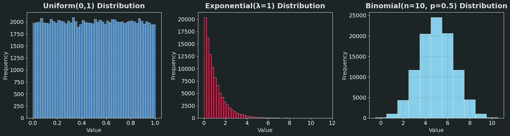
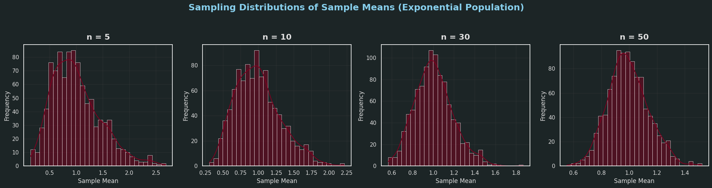
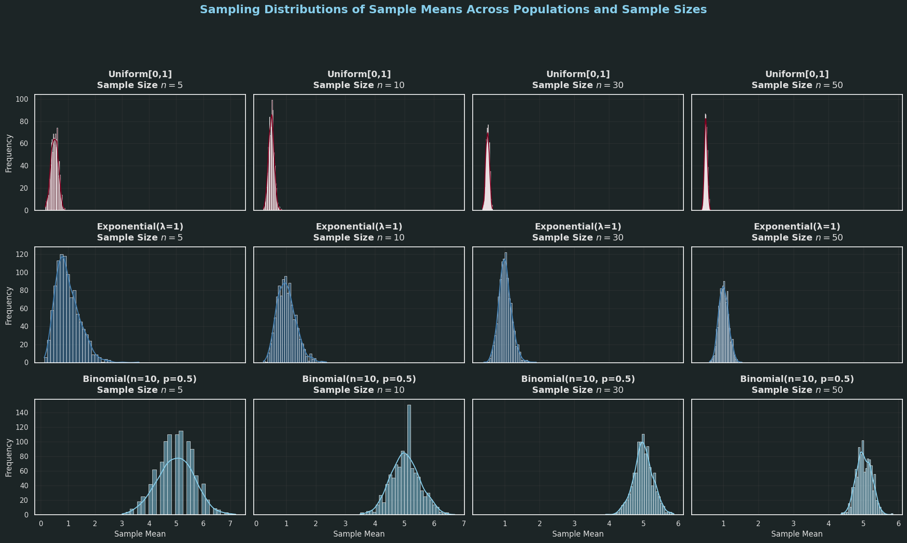

Problem 1
📊 Simulating Sampling Distributions
🎯 Objective
To demonstrate the Central Limit Theorem (CLT), we begin by generating large populations from various distributions:
- Uniform Distribution
- Exponential Distribution
- Binomial Distribution
Each dataset will represent a "population", from which we will later draw repeated random samples to study the behavior of their means.
🔢 Step 1: Generate Populations
Let: - \(N = 100000\) be the size of each simulated population.
We will define each population as follows:
- Uniform Distribution:
- Exponential Distribution:
- Binomial Distribution:

import numpy as np
import matplotlib.pyplot as plt
# Set seed for reproducibility
np.random.seed(42)
# Population size
N = 100_000
# --- Generate Populations ---
# 1. Uniform Distribution: U(0, 1)
population_uniform = np.random.uniform(low=0, high=1, size=N)
# 2. Exponential Distribution: Exp(λ=1)
population_exponential = np.random.exponential(scale=1.0, size=N)
# 3. Binomial Distribution: Binomial(n=10, p=0.5)
population_binomial = np.random.binomial(n=10, p=0.5, size=N)
# --- Set Styling for a Cooler Look ---
plt.style.use('dark_background')
plt.rcParams.update({
'font.family': 'sans-serif',
'font.size': 14,
'axes.titlesize': 18,
'axes.labelsize': 14,
'axes.labelcolor': '#E0E0E0',
'axes.facecolor': '#1C2526',
'grid.color': '#444444',
'grid.alpha': 0.3,
'grid.linestyle': '--',
'text.color': '#E0E0E0'
})
# --- Plot Histograms ---
fig, axs = plt.subplots(1, 3, figsize=(18, 5), facecolor='#1C2526')
# Uniform
axs[0].hist(population_uniform, bins=50, color='#4682B4', edgecolor='#FFFFFF', linewidth=0.5)
axs[0].set_title("Uniform(0,1) Distribution", pad=10, fontweight='bold')
axs[0].set_xlabel("Value")
axs[0].set_ylabel("Frequency")
axs[0].grid(True)
# Exponential
axs[1].hist(population_exponential, bins=50, color='#800020', edgecolor='#FFFFFF', linewidth=0.5)
axs[1].set_title("Exponential(λ=1) Distribution", pad=10, fontweight='bold')
axs[1].set_xlabel("Value")
axs[1].set_ylabel("Frequency")
axs[1].grid(True)
# Binomial
axs[2].hist(population_binomial, bins=range(0,12), color='#87CEEB', edgecolor='#FFFFFF', linewidth=0.5, align='left')
axs[2].set_title("Binomial(n=10, p=0.5) Distribution", pad=10, fontweight='bold')
axs[2].set_xlabel("Value")
axs[2].set_ylabel("Frequency")
axs[2].grid(True)
# Add a subtle glow effect with alpha for cooler visuals
for ax in axs:
ax.patch.set_alpha(0.9)
plt.tight_layout()
plt.show()
🧪 Step 2: Modeling Sampling Distributions
🎯 Goal
To investigate the Central Limit Theorem (CLT) by modeling how sample means behave when taken from various population distributions.
📚 Central Limit Theorem (CLT)
The Central Limit Theorem asserts:
For a population with mean \(\mu\) and variance \(\sigma^2\), the distribution of the sample mean \(\bar{X}\) approximates a normal distribution as the sample size \(n\) grows — irrespective of the original population's form.
In mathematical terms, if \(X_1, X_2, ..., X_n\) are independent and identically distributed (i.i.d.) random variables with mean \(\mu\) and variance \(\sigma^2\), then the standardized sample mean:
approaches the standard normal distribution \(N(0, 1)\) in distribution as \(n\) becomes very large.
🛠️ Simulation Strategy
We will:
- Select a variety of sample sizes: \(n = 5, 10, 30, 50\)
- For each \(n\):
- Extract a large number of samples (e.g., 1000)
- Calculate the sample mean for each sample
- Gather all sample means to create the sampling distribution
- Visualize histograms of these sampling distributions and monitor the trend toward normality
🐍 Python Code

import numpy as np
import matplotlib.pyplot as plt
import seaborn as sns
# Set a custom dark theme with seaborn
sns.set(style="darkgrid", rc={"axes.facecolor": "#1C2526", "figure.facecolor": "#1C2526", "grid.color": "#444444", "grid.alpha": 0.3})
# Define population
N = 100_000
np.random.seed(42)
population = np.random.exponential(scale=1.0, size=N)
# Sample sizes to test
sample_sizes = [5, 10, 30, 50]
num_samples = 1000 # Number of samples per size
# Custom color palette inspired by burgundy (#800020) and lighter blue (#4682B4)
colors = ['#800020', '#4682B4', '#87CEEB', '#400010'] # Burgundy, Light Blue, Light Blue Accent, Dark Burgundy
sns.set_palette(sns.color_palette(colors))
# Plotting
fig, axs = plt.subplots(1, len(sample_sizes), figsize=(20, 5), facecolor='#1C2526')
for i, n in enumerate(sample_sizes):
sample_means = []
for _ in range(num_samples):
sample = np.random.choice(population, size=n, replace=False)
sample_means.append(np.mean(sample))
sns.histplot(sample_means, bins=30, kde=True, ax=axs[i], edgecolor='#FFFFFF', linewidth=0.5)
axs[i].set_title(f'n = {n}', fontsize=16, fontweight='bold', pad=10, color='#E0E0E0')
axs[i].set_xlabel('Sample Mean', fontsize=12, color='#E0E0E0')
axs[i].set_ylabel('Frequency', fontsize=12, color='#E0E0E0')
axs[i].tick_params(colors='#E0E0E0') # Match tick colors to text
# Add a subtle glow effect with alpha
axs[i].patch.set_alpha(0.9)
plt.suptitle('Sampling Distributions of Sample Means (Exponential Population)', fontsize=18, fontweight='bold', color='#87CEEB', y=1.05)
plt.tight_layout()
plt.show()
📈 Step 3: Displaying Sampling Distribution Outcomes
🎯 Aim
- Create histograms of the sample averages for each population distribution across different sample sizes.
- Analyze the speed of convergence of these sampling distributions toward a normal shape.
- Evaluate how the form of the initial population distribution influences convergence.
🔎 Conceptual Foundation
Consider the Central Limit Theorem (CLT):
For independent, identically distributed random variables \(X_1, X_2, \ldots, X_n\) with mean \(\mu\) and variance \(\sigma^2\), the standardized sample mean
tends toward a standard normal distribution \(N(0,1)\) as the sample size \(n\) grows infinitely large.
📌 Key Aspects to Note
- Sampling distributions for small \(n\) mirror the population's shape.
- With increasing \(n\), the sampling distributions turn more symmetric and bell-like.
- The rate of convergence is influenced by the population distribution's:
- Skewness
- Kurtosis
- Variance
🐍 Python Code for Visualization

import numpy as np
import matplotlib.pyplot as plt
import seaborn as sns
# Set a custom dark theme with seaborn
sns.set(style="darkgrid", rc={"axes.facecolor": "#1C2526", "figure.facecolor": "#1C2526", "grid.color": "#444444", "grid.alpha": 0.3})
# Set random seed for reproducibility
np.random.seed(42)
# Population size
N = 100_000
# Generate populations
populations = {
"Uniform[0,1]": np.random.uniform(0, 1, N),
"Exponential(λ=1)": np.random.exponential(1, N),
"Binomial(n=10, p=0.5)": np.random.binomial(n=10, p=0.5, size=N),
}
sample_sizes = [5, 10, 30, 50]
num_samples = 1000
# Custom color palette inspired by burgundy (#800020) and lighter blue (#4682B4)
colors = ['#800020', '#4682B4', '#87CEEB'] # Burgundy, Light Blue, Light Blue Accent
sns.set_palette(sns.color_palette(colors))
# Plotting
fig, axes = plt.subplots(len(populations), len(sample_sizes), figsize=(20, 12), sharex='col', sharey='row', facecolor='#1C2526')
for row_idx, (dist_name, population) in enumerate(populations.items()):
for col_idx, n in enumerate(sample_sizes):
sample_means = []
for _ in range(num_samples):
sample = np.random.choice(population, size=n, replace=False)
sample_means.append(np.mean(sample))
ax = axes[row_idx, col_idx]
sns.histplot(sample_means, bins=30, kde=True, color=colors[row_idx % len(colors)], ax=ax, edgecolor='#FFFFFF', linewidth=0.5)
ax.set_title(f"{dist_name}\nSample Size $n={n}$", fontsize=14, fontweight='bold', pad=10, color='#E0E0E0')
if col_idx == 0:
ax.set_ylabel('Frequency', fontsize=12, color='#E0E0E0')
if row_idx == len(populations)-1:
ax.set_xlabel('Sample Mean', fontsize=12, color='#E0E0E0')
ax.tick_params(colors='#E0E0E0') # Match tick colors to text
ax.grid(True)
# Add a subtle glow effect with alpha
ax.patch.set_alpha(0.9)
plt.suptitle("Sampling Distributions of Sample Means Across Populations and Sample Sizes", fontsize=18, fontweight='bold', color='#87CEEB', y=1.02)
plt.tight_layout(rect=[0, 0.03, 1, 0.95])
plt.show()
🔎 Step 4: Investigating Factors Shaping the Central Limit Theorem
🎯 Goals
- Explore how the form of the initial population distribution impacts the speed of convergence to a normal shape.
- Assess the effect of sample size \(n\) on the approximation to a normal distribution.
- Study the influence of population variance \(\sigma^2\) on the dispersion of the sampling distribution of the mean.
1. Role of Population Distribution Form
- The CLT ensures a move toward normality, but the pace of convergence hinges on the form of the population distribution.
- Distributions with significant skewness or heavy tails (e.g., Exponential, Cauchy) need larger sample sizes for the sample mean to near normality.
- For balanced and light-tailed distributions (e.g., Uniform, Binomial), the convergence tends to be quicker.
2. Effect of Sample Size \(n\)
- The sampling distribution of the mean \(\bar{X}\) for sample size \(n\) exhibits:
$$ \text{Mean}(\bar{X}) = \mu $$
$$ \text{Variance}(\bar{X}) = \frac{\sigma^2}{n} $$
-
As \(n\) grows:
-
The variance of \(\bar{X}\) shrinks, making the sampling distribution more tightly clustered around \(\mu\).
- Per the CLT, the distribution of \(\bar{X}\) nears the normal distribution:
$$ \bar{X} \xrightarrow{d} N\left(\mu, \frac{\sigma^2}{n}\right) $$
- Visualizing various \(n\) values aids in tracking this clustering and shape evolution.
3. Influence of Population Variance \(\sigma^2\)
- The spread of the sampling distribution is tied to the population variance \(\sigma^2\).
- A larger \(\sigma^2\) results in greater variation in sample means.
- This underscores the importance of knowing or estimating \(\sigma^2\) in statistical inference.
📊 Overview of Connections
-
The interplay of population form, sample size, and variance dictates how swiftly and closely the sampling distribution of the mean approaches normality.
-
Core equation encapsulating the CLT:
$$ Z = \frac{\bar{X} - \mu}{\sigma/\sqrt{n}} \xrightarrow{d} N(0,1) $$
🐍 Next: Python Code to Test These Factors
-
Model sampling distributions with varying:
-
Population forms (e.g., Uniform, Exponential, Binomial)
- Sample sizes (\(n = 5, 10, 30, 50\))
-
Variances (e.g., by adjusting distribution scales)
-
Illustrate the outcomes to enhance comprehension of the CLT in practice.